Challenge 1
Nhìn hình và chọn từ/cụm từ đúng.
Người lớn: nguồn/ghi chú
1. 🟥 → `red / blue / green / yellow`
Đáp án giáo viên xem trong bài nguồn, không hiển thị trước cho bé.
Ảnh WebP nhẹ, không có nhãn đáp án trong bitmap. Câu hỏi và lựa chọn nằm riêng. Audio Challenge do chủ dự án bổ sung; hiện có thể nhờ người lớn đọc từ bài nguồn.
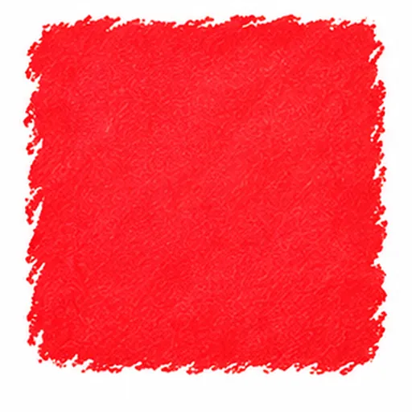
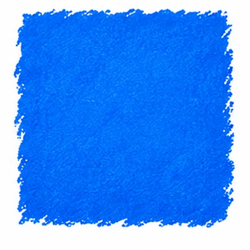
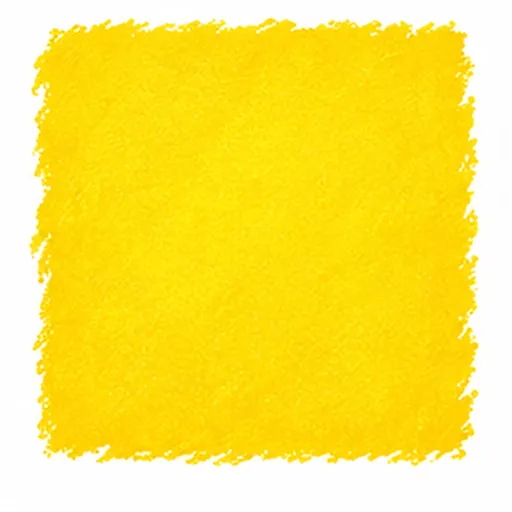
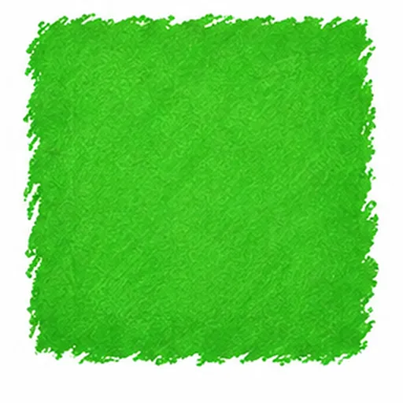
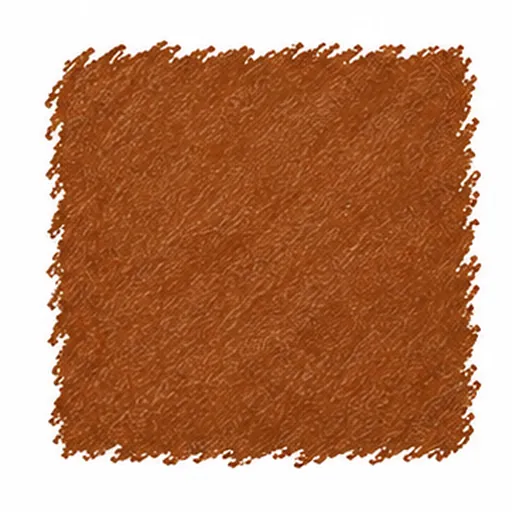
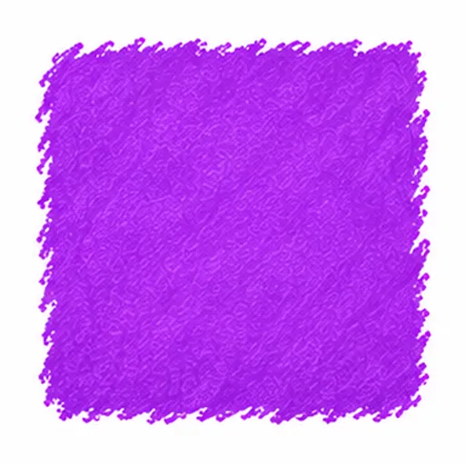
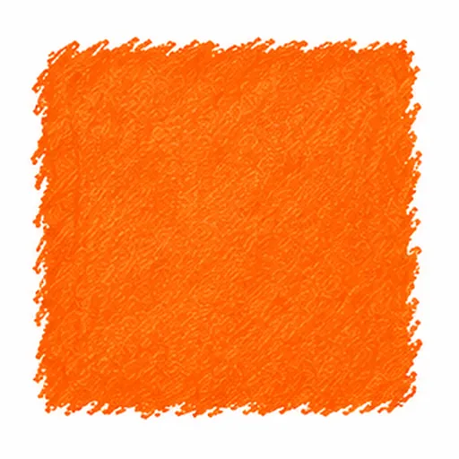
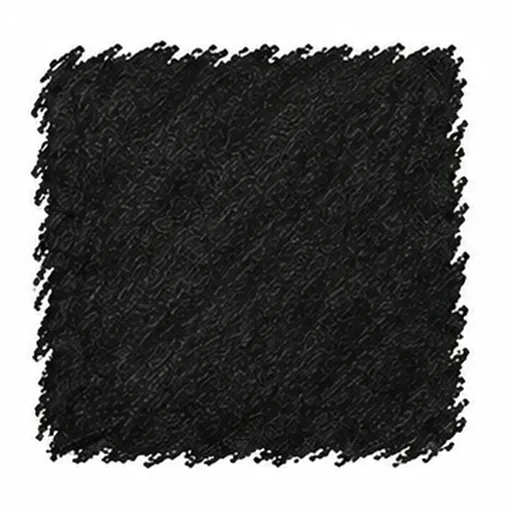
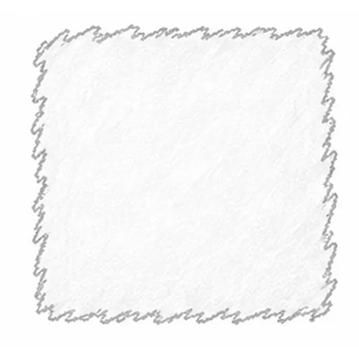
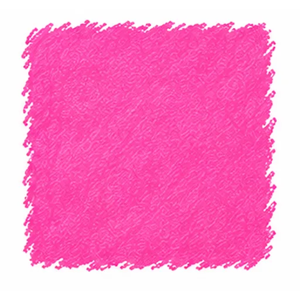
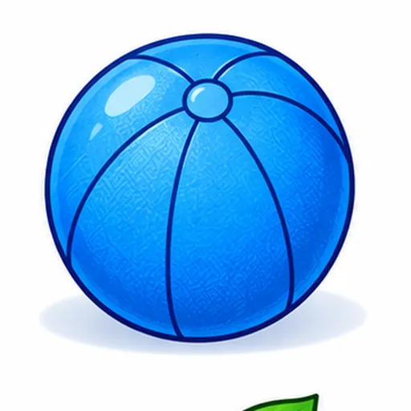
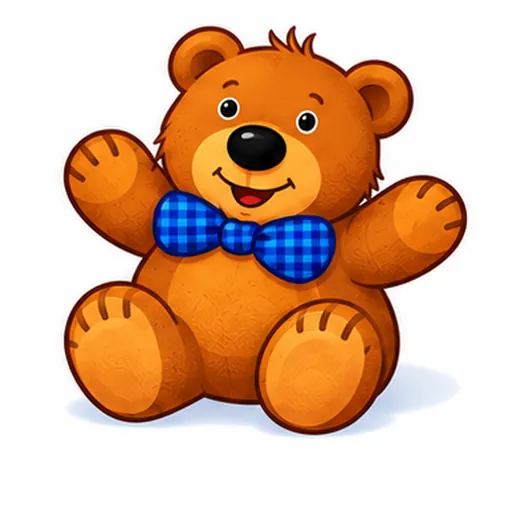
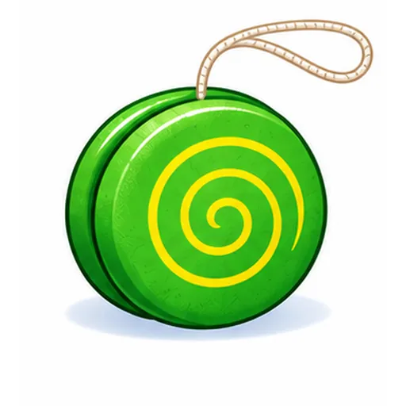
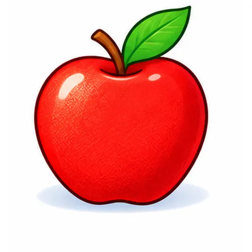
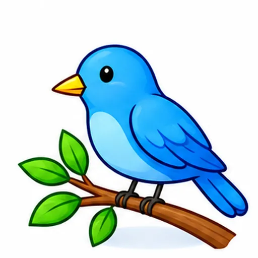
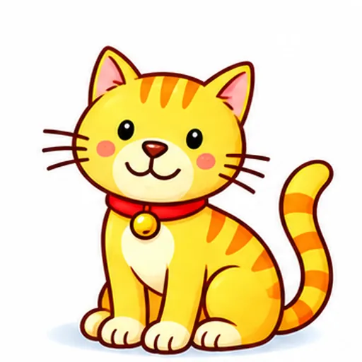
Nhìn hình và chọn từ/cụm từ đúng.
1. 🟥 → `red / blue / green / yellow`
Đáp án giáo viên xem trong bài nguồn, không hiển thị trước cho bé.
Nghe audio hoặc người lớn đọc, rồi chọn đáp án phù hợp.
1. **Come here.**
1. **Come here.** Người lớn chọn một nội dung hợp lệ trong bài nguồn để đọc; audio Challenge sẽ bổ sung sau.
Đáp án giáo viên xem trong bài nguồn, không hiển thị trước cho bé.
r _ d
1. r _ d *(red)* 🟥
Đáp án giáo viên xem trong bài nguồn, không hiển thị trước cho bé.
What color is it?
| 1. What color is it? 🟪 | A. It's a green car. |
Đáp án giáo viên xem trong bài nguồn, không hiển thị trước cho bé.
Nhìn hình. Tự nói từ hoặc một câu phù hợp.
🟧 → `pink / orange / brown / yellow`
Đáp án giáo viên xem trong bài nguồn, không hiển thị trước cho bé.
Nhìn hình. Nói hoặc điền câu trả lời: → ____________________
🟥 → ____________________
Đáp án giáo viên xem trong bài nguồn, không hiển thị trước cho bé.
Các câu chưa có cue cố định được ghi trong mapping. Câu trả lời cá nhân không bị ép Yes/No. Toàn bộ bài luyện gốc được giữ nguyên.